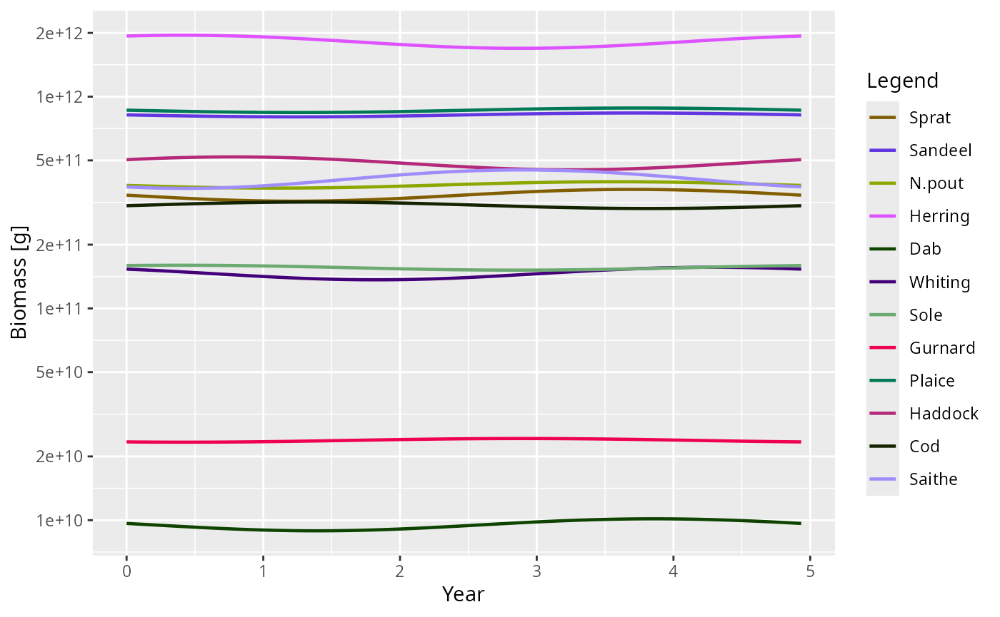
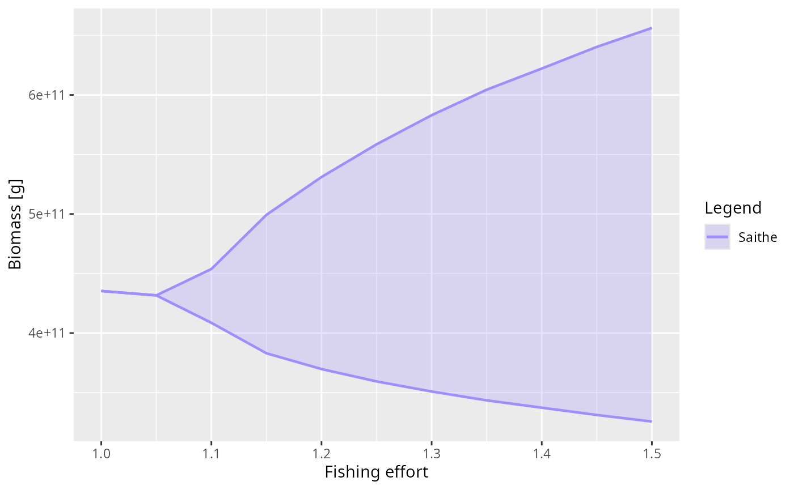
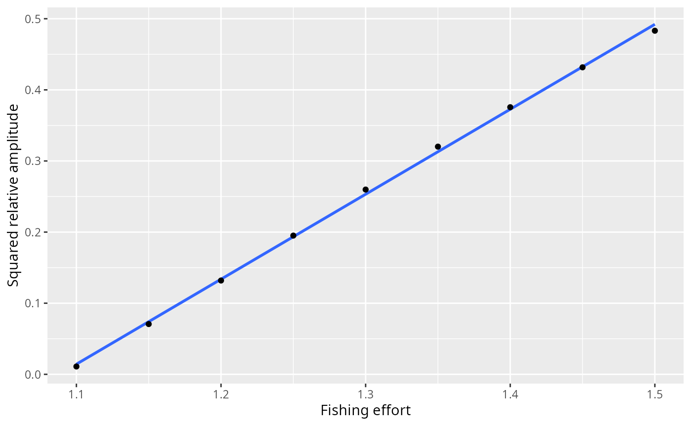

Dynamic stability and Hopf bifurcations
Source:vignettes/dynamic_stability.Rmd
dynamic_stability.RmdIntroduction
In a mizer model, a steady state represents an equilibrium where the
abundance of every species at every size remains constant over time.
While tuneSteadyState() attempts to find such a state by
projecting the dynamics forward in time until changes stop, this only
works if the steady state is dynamically stable.
If a steady state is unstable, small perturbations will grow rather than decay, and the system will naturally move away from the steady state, often settling into persistent oscillations (a limit cycle) or more complex dynamics.
Mizer’s steady-state finders take a solver argument for
exactly this case. With solver = "newton" they find steady
states irrespective of their stability by solving the algebraic
equilibrium equations directly. Once a steady state is found, its
stability can be analysed using getStability().
This vignette explains how to perform this stability analysis, what
the results mean, how mizer’s steady-state finders detect and
characterise limit cycles, and how to use the linearised limit cycle
approximation provided by getOscillationModeSim() to
understand emergent oscillations around a Hopf bifurcation.
Linear stability analysis
Mizer discretises the size axis but leaves time continuous. On the size grid the model is therefore a system of ordinary differential equations,
\[ \frac{dN}{dt} = F(N), \]
where \(N\) is the full state vector (abundances of all species at all sizes) and \(F\) collects the divergence of the growth flux, the mortality sink and the reproductive influx at the egg size. A steady state \(N^*\) is a state at which \(F(N^*) = 0\).
Close to \(N^*\) a small perturbation \(\delta N(t) = N(t) - N^*\) obeys the linearised equation \(d\,\delta N/dt = J\,\delta N\), where \(J = \partial F / \partial N\) evaluated at \(N^*\) is the Jacobian matrix. Its eigenvalues \(\lambda_i\) decide everything: each mode of the perturbation evolves as \(e^{\lambda_i t}\), so the steady state is stable when every eigenvalue has negative real part and unstable as soon as one has a positive real part.
Because abundances in a mizer model span dozens of orders of magnitude across the size spectrum, evaluating stability in terms of absolute perturbations can be numerically poorly-scaled. It is more natural to consider multiplicative (relative) perturbations, where we perturb the steady state by a small relative amount \(x(t)\):
\[ N_i(t) = N_i^* \left(1 + x_i(t)\right). \]
The relative Jacobian \(K\) that governs these relative perturbations,
\[ K_{ij} = \frac{N_j^*}{N_i^*} \frac{\partial F_i}{\partial N_j}(N^*), \]
is related to \(J\) by a similarity transform \(K = D^{-1} J D\), where \(D\) is a diagonal matrix of the steady-state abundances \(N^*\). Because \(K\) and \(J\) are similar matrices, they have exactly the same eigenvalues.
getStability() computes \(J\) by perturbing each state variable in
turn and differencing the rates of change that mizer’s own rate
functions return, so the eigenvalues it reports are those of the model
as it is configured, including any rate function registered with
setRateFunction() and whichever spatial scheme
second_order_w() selects. No time step enters this
calculation. The eigenvalues are a property of the model, not
of a solver, and they are what a simulation with a small enough time
step converges to.
(Note on numerical implementation: while analysing the relative
Jacobian \(K\) is conceptually natural,
computing it requires dividing by \(N_i^*\), which causes floating-point
overflow for structurally zero size classes (e.g., extinct species or
truncated tails). Therefore, getStability() numerically
computes the absolute Jacobian \(J\)
using finite-difference steps scaled multiplicatively to the local
density. This is mathematically equivalent to the relative analysis but
avoids dividing by zero.)
The stability of the model and the stability of the solver
There is a second, quite different question one can ask: not whether
the model is stable, but whether mizer’s numerical time
step is. project() advances the state by a discrete
map
\[ N(t+\Delta t) = G(N(t)), \]
and the eigenvalues \(\mu_i\) of the
Jacobian of \(G\) at the fixed point
decide whether that map amplifies a perturbation: it does not when the
spectral radius \(\max_i|\mu_i|\) is below 1.
getDiscreteStability() reports those numbers for a chosen
step size dt.
The two questions have different answers, and the difference matters.
Mizer’s step solves the transport implicitly, and implicit schemes
introduce a “temporal numerical diffusion” that artificially damps
oscillations. At a large dt a steady state that the model
does not hold can therefore have a spectral radius below 1 — the
simulation settles down onto a state that is an artefact of the step
size. We will see exactly that below.
It is tempting to try to recover \(J\) from \(G\) algebraically. If mizer’s step were
fully implicit, \(N^{t+\Delta t} =
N^t + \Delta t\,F(N^{t+\Delta t})\), then the two Jacobians would
be related exactly by \(\mu = 1/(1 - \Delta
t\,\lambda)\) and one could simply invert. But mizer’s step is
not fully implicit: it evaluates all the rates — encounter, feeding
level, predation mortality, growth — at the state at the start
of the step, and only the transport solve that follows is implicit. The
inversion is then correct only to first order in \(\Delta t\), and at \(\Delta t = 1\) it is wrong by more than an
order of magnitude. This is why getStability()
differentiates \(F\) directly
instead.
Driving the North Sea model unstable
Let’s load mizer and start with the standard North Sea model.
suppressMessages(devtools::load_all("..", quiet = TRUE))
params <- NS_paramsThe North Sea model at its default fishing effort is dynamically
stable, so it makes a rather uneventful example: perturb it and it
simply settles back down. To see something more interesting we increase
the fishing pressure, setting the effort of every gear to
1.5. This pushes the model across a Hopf
bifurcation into a regime where the steady state is
unstable.
Because the steady state is now unstable, the default
solver = "project" cannot find it — projecting the dynamics
forward would diverge away from it. This is exactly the situation
solver = "newton" is designed for: it solves the
equilibrium equations directly and therefore finds the steady state
regardless of its stability. We use findSteadyState()
rather than tuneSteadyState() because we want the steady
state of the model as it stands, with the reproduction parameters left
alone.
params_f15 <- findSteadyState(params, effort = 1.5, solver = "newton")Diagnosing the instability
Is this steady state stable? We compute its stability metrics with
getStability().
stab <- getStability(params_f15, effort = 1.5)
stab$max_real_part
stab$stable#> [1] 0.07095636
#> [1] FALSEThe largest real part among the eigenvalues, \(\text{Re}(\lambda) = 0.071 > 0\), so the steady state is unstable: a perturbation grows at that exponential rate, roughly a factor \(e\) every 14 years.
What mizer’s time step makes of it
The instability is a property of the model. Whether you see
it in a simulation depends on the time step, and
getDiscreteStability() says by how much. It reports the
spectral radius \(\max_i|\mu_i|\) of
the one-step map; converting that into a growth rate per year, \(\log(\max_i|\mu_i|)/\Delta t\), puts it on
the same footing as max_real_part:
growth_rate <- function(dt) {
rho <- getDiscreteStability(params_f15, effort = 1.5, dt = dt)$spectral_radius
log(rho) / dt
}
sapply(c(0.1, 0.5, 1), growth_rate)#> [1] -0.005132024 -0.040072184 0.101244950Against the model’s own 0.071 per year, mizer’s default
euler step gets none of these right, and not in a tidy
direction either. At \(\Delta t = 0.1\)
the implicit transport solve damps the growing oscillation almost
exactly as fast as the model grows it, so the scheme sits at the edge of
stability and a run started near the steady state stays flat — a steady
state that looks perfectly settled and is an artefact of the step size.
We watch that happen below. At \(\Delta t =
0.5\) the map is firmly stable; at \(\Delta t = 1\) it is unstable once more,
but oscillating with a period near 3.4 years that belongs to no mode of
the model.
This is the practical reason to keep an eye on dt, to
prefer method = "tr_bdf2" when the dynamics matter, and the
reason getStability() does not go through the one-step map
at all.
To see how it is unstable, we look at the dominant eigenvalue (the one with the largest real part).
stab$eigenvalues[1]
#> [1] 0.07095636+1.273383iIt is complex with a positive real part (\(\lambda \approx 0.071 + 1.273i\)). A purely real, positive eigenvalue would signal monotone growth, but a complex pair with a positive real part means the perturbation grows while oscillating — a Hopf bifurcation. The period of this oscillation is set by the imaginary part of the eigenvalue,
\[ \text{Period} = \frac{2\pi}{|\text{Im}(\lambda)|} \text{ years}, \]
which mizer reports as dominant_period:
stab$dominant_period
#> [1] 4.934245So the linear analysis predicts a growing oscillation with a period of roughly 4.93 years.
Watching the limit cycle emerge with
projectUntilSettled()
We can confirm these predictions by projecting the dynamics with
projectUntilSettled().
Because the steady state is unstable, running the dynamics forward
will never “converge” to a fixed point in the usual sense.
projectUntilSettled() recognises this: it attaches a
"convergence" attribute to its result that reports whether
the trajectory settled on a stable fixed point or a limit cycle, along
with its period and relative amplitude. It returns a full
MizerSim object covering the run, which is what we want
here — the approach to the cycle is the thing to look at.
sim_cycle <- projectUntilSettled(params, effort = 1.5, t_max = 200,
t_check = 0.2, t_save = 0.2,
method = "tr_bdf2")
attr(sim_cycle, "convergence")#> $termination
#> [1] "cycle_detected"
#>
#> $converged
#> [1] TRUE
#>
#> $attractor
#> [1] "limit_cycle"
#>
#> $distance
#> [1] 6.144612
#>
#> $residual
#> [1] 0.3030617
#>
#> $years
#> [1] 29.8
#>
#> $period
#> [1] 5.4
#>
#> $amplitude
#> [1] 0.6581569projectUntilSettled() correctly identifies the attractor
as a limit cycle with a period of about 5.4 years and a peak-to-trough
biomass amplitude of about 66% of the mean. Applied to a model with a
genuine stable steady state (such as the default params at
effort 0), the same call reports attractor = "fixed_point",
which it does only when the biomasses have actually stopped drifting and
not merely because the distance function went quiet:
attr(projectUntilSettled(params, t_max = 100), "convergence")$attractor#> [1] "fixed_point"Because it is a standard MizerSim object, we can plot
the emergence of the limit cycle directly:
plotBiomass(sim_cycle)
Notice how well the detected nonlinear period (about 5.4 years)
agrees with the dominant_period of about 4.93 years from
the linear analysis, even though the cycle we are looking at is anything
but small: its relative amplitude is about 66% of the mean. The linear
analysis is a prediction about infinitesimal perturbations of the steady
state, so the remaining difference of under six percent is what the
nonlinearity does to the shape of the large-amplitude cycle. Close to
the bifurcation point the two agree even more closely.
Visualising the oscillation shape
Finally, getOscillationModeSim() constructs a
MizerSim object covering one period of the oscillation
in the linear approximation, using the eigenvector of the
dominant oscillatory mode. This isolates the pure shape
of the cycle — which species and sizes participate and with what phase —
without the growth or the nonlinear distortion of the full run. Fish and
resource are driven by the same eigenvector and the same scale factor,
so the resource carries the phase the mode gives it: on this model it
leads the total fish biomass by about 0.3 years of the 5.12-year
period.
lcs <- getOscillationModeSim(params_f15, amplitude = 0.1)Because lcs is an ordinary MizerSim object,
any of the standard mizer plotting functions can be used to explore it.
For example, the biomass over one period:
plotBiomass(lcs)
This linearised cycle gives a clear picture of the cohort-resonance pattern driving the oscillation — the mode shape that the full nonlinear limit cycle grows out of.
Tracing the bifurcation with scanModel()
Everything so far has looked at a single fishing effort.
scanModel() varies one aspect of a model over a range of
values and measures a quantity on whatever attractor the model settles
onto at each of them — which is what a bifurcation diagram is. Here we
scan the effort of every gear from below the bifurcation to well above
it, measuring the biomass of Saithe, the species with the largest
response. scanEffort() supplies the function that applies
each effort to the model.
scan <- scanModel(params, scan_values = seq(1.0, 1.5, 0.05),
set_func = scanEffort(), value_func = getBiomass,
species = "Saithe", method = "tr_bdf2",
t_max = 2000, amp_rel_tol = 0.01)The long t_max and the tight amp_rel_tol
are deliberate. Close to a Hopf bifurcation the leading eigenvalue is
near zero, so the approach to the attractor is correspondingly slow, and
a shorter run reports a cycle that is still growing rather than the one
the model ends up on.
Plotting with style = "envelope" draws the smallest and
the largest value reached on the attractor, so a fixed point appears as
a single line and a limit cycle as the band between its extremes:
plot(scan, style = "envelope", log_y = FALSE)
The band has zero width up to an effort of 1.05 and opens continuously above it. That is the signature of a supercritical Hopf bifurcation: the limit cycle is born at the bifurcation with zero amplitude and grows from there. In the subcritical case a cycle of finite size would appear abruptly instead, and the model would show hysteresis — a different attractor depending on whether the effort was being raised or lowered.
The attractor found at each effort is recorded in the scan, along with the period of the cycle where there is one:
data.frame(effort = scan[[1]], attractor = scan$attractor,
period = round(scan$period, 1))
#> effort attractor period
#> 1 1.00 fixed_point NA
#> 2 1.05 fixed_point NA
#> 3 1.10 limit_cycle 5.2
#> 4 1.15 limit_cycle 5.2
#> 5 1.20 limit_cycle 5.3
#> 6 1.25 limit_cycle 5.4
#> 7 1.30 limit_cycle 5.4
#> 8 1.35 limit_cycle 5.5
#> 9 1.40 limit_cycle 5.4
#> 10 1.45 limit_cycle 5.4
#> 11 1.50 limit_cycle 5.4The period stays close to the dominant_period that the
linear analysis predicted, right across the range.
A supercritical Hopf bifurcation also predicts how the cycle
grows: its amplitude rises like the square root of the distance past the
bifurcation, so the squared amplitude should be a straight line in the
effort. The scan carries the minimum and maximum over the attractor in
its ymin and ymax columns, so the relative
amplitude is one subtraction away:
effort <- scan[[1]]
amplitude <- (scan$ymax - scan$ymin) / scan[[2]]
cycles <- scan$attractor == "limit_cycle"
fit <- lm(amplitude[cycles]^2 ~ effort[cycles])
ggplot2::ggplot(data.frame(effort = effort[cycles],
squared_amplitude = amplitude[cycles]^2),
ggplot2::aes(effort, squared_amplitude)) +
ggplot2::geom_smooth(method = "lm", formula = y ~ x, se = FALSE) +
ggplot2::geom_point() +
ggplot2::labs(x = "Fishing effort", y = "Squared relative amplitude")
It is: the fit has an \(R^2\) of 0.999, and holds not only close to the bifurcation but over the whole range scanned.
Extrapolating that line back to zero amplitude puts the bifurcation
at an effort of about 1.088. The eigenvalues give an independent
estimate: we find the steady state at a few efforts with
solver = "newton" — which works on either side of the
bifurcation, since it does not care about stability — and ask where the
leading real part changes sign.
efforts <- c(1.00, 1.05, 1.10, 1.15)
max_real <- numeric(length(efforts))
p_e <- params
for (i in seq_along(efforts)) {
p_e <- findSteadyState(p_e, effort = efforts[i], solver = "newton")
max_real[i] <- getStability(p_e, effort = efforts[i])$max_real_part
}
data.frame(effort = efforts, max_real_part = signif(max_real, 3))#> effort max_real_part
#> 1 1.00 -0.01740
#> 2 1.05 -0.00354
#> 3 1.10 0.00862
#> 4 1.15 0.01940The leading real part crosses zero at an effort of about 1.065, a little below the 1.088 that the amplitude line extrapolates to. The two are calculated in completely different ways — one from the Jacobian at a steady state, the other from the size of the cycles the dynamics settle onto — and the small gap between them is the price of the projections: a finite time step leaves a little numerical damping behind, which pushes the apparent onset to slightly higher effort. The next section shows how much damping that can be.
What the default time step makes of the same model
Every projection above chose method = "tr_bdf2"
deliberately. It is worth seeing what mizer’s default euler
step does with the same model, because the answer depends on where the
run starts and neither case reports the model.
Repeat the run of the previous section with the default step. The trajectory still settles on a limit cycle — but not on the model’s one:
sim_euler <- projectUntilSettled(params, effort = 1.5, t_max = 200,
t_check = 0.2, t_save = 0.2,
method = "euler")
attr(sim_euler, "convergence")[c("attractor", "period", "amplitude")]#> $attractor
#> [1] "limit_cycle"
#>
#> $period
#> [1] 5.1
#>
#> $amplitude
#> [1] 0.1663231The period is close to the one tr_bdf2 found, but the
amplitude is only about 17% of the mean against the 66% of the true
cycle, smaller by a factor of about 4. The numerical damping does not
remove the oscillation here; it shrinks it.
Start near the steady state instead and the same damping removes it altogether. We nudge the fixed point by 5% and project twice, changing nothing but the method:
params_nudged <- params_f15
initialN(params_nudged) <- initialN(params_f15) * 1.05
run <- function(method) {
projectUntilSettled(params_nudged, effort = 1.5, t_max = 200,
t_check = 0.2, t_save = 0.2, method = method)
}
sim_nudged_euler <- run("euler")
sim_nudged_trbdf2 <- run("tr_bdf2")
attr(sim_nudged_euler, "convergence")[c("attractor", "residual")]
attr(sim_nudged_trbdf2, "convergence")[c("attractor", "period", "amplitude")]#> $attractor
#> [1] "fixed_point"
#>
#> $residual
#> [1] 0.02056507
#> $attractor
#> [1] "limit_cycle"
#>
#> $period
#> [1] 5.2
#>
#> $amplitude
#> [1] 0.6349932Stepped with euler the nudge decays back to the fixed
point and the run reports attractor = "fixed_point", with a
residual drift small enough that mizer’s own test calls the state
settled:
isSteady(finalParams(sim_nudged_euler))#> [1] TRUEStepped with tr_bdf2 the same nudge grows, at the rate
the eigenvalue predicts, into a cycle of period 5.2 years and relative
amplitude 0.63.
So the two failure modes are different, and both are decided by the
step rather than by the model: near the steady state the default step
turns an unstable fixed point into a stable-looking one, and far from
it, it leaves the oscillation in place but understates how big it is.
This is why getStability() works from the model’s own rates
of change, and why it is worth checking a suspicious steady state with a
smaller dt or with method = "tr_bdf2" before
believing it.
A caveat: the analysis assumes a smooth model
Everything in this vignette rests on the one-step map being
differentiable at the steady state, so that the finite-difference
Jacobian means something. That holds for models built from mizer’s own
rate functions, but not necessarily for a model carrying a custom rate
registered with setRateFunction(). If such a rate jumps as
a function of the abundances, solver = "newton" may stall
and getStability() can return a plausible-looking number
that describes neither branch of the dynamics.
The cheapest check is to re-run getStability() with a
different h: on a smooth model max_real_part
is unchanged to several figures. See Discontinuous rate functions.